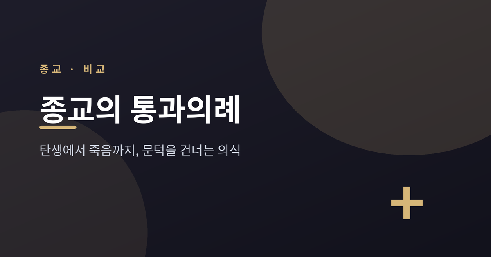
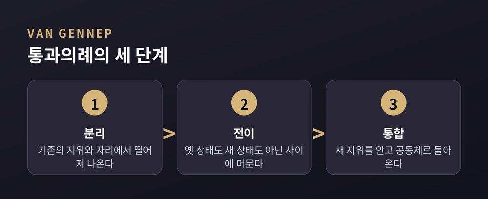
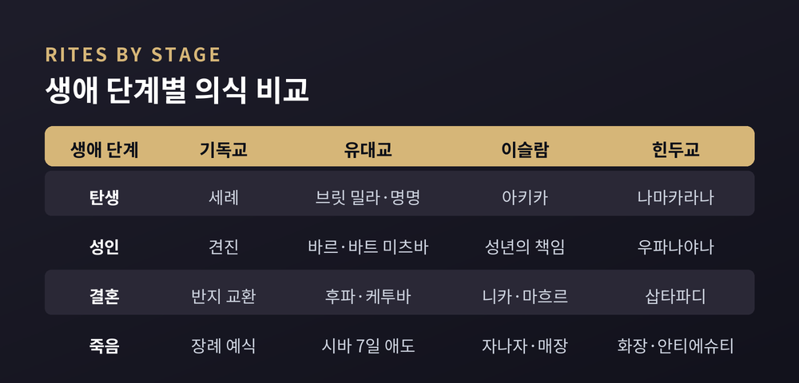
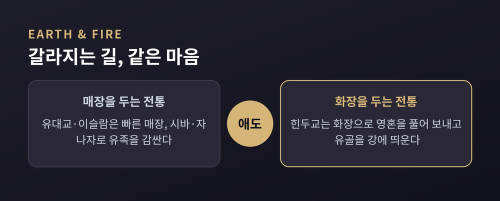

탄생·성인·결혼·죽음을 건너는 의식들

사람은 살면서 몇 개의 문턱을 넘습니다.
태어나고, 어른이 되고, 짝을 만나고, 끝내 세상을 떠납니다.
세계의 여러 종교는 이 길목마다 의식을 두었습니다. 오늘은 그 의식들을 비교의 눈으로 정리해 보겠습니다.
특정 전통을 높이거나 낮추려는 글이 아닙니다. 여러 전통을 나란히 두고 함께 살펴보려 합니다.
'통과의례'라는 말은 1909년 프랑스 민족학자 아르놀드 반 헤네프가 처음 썼습니다.
그는 의식이 세 국면을 거친다고 보았습니다.
먼저 기존의 자리에서 떨어져 나오는 분리.
다음으로 옛 상태도 새 상태도 아닌 '사이'에 머무는 전이.
끝으로 새 지위를 안고 공동체로 돌아오는 통합입니다.
영국 인류학자 빅터 터너는 이 가운데 '사이' 단계를 깊이 파고들었습니다.
그는 이 시기를 리미널리티라 불렀습니다. 안도 밖도 아닌 문지방의 자리입니다.
이때 사람들은 평소의 신분과 역할이 벗겨집니다.
터너는 그 자리에서 생기는 평등한 일체감을 코뮤니타스라 이름 붙였습니다.
어색한 멈춤이 아니라, 새로움이 빚어지는 자리로 본 셈입니다.

태어남은 한 사람을 공동체로 들이는 첫 문턱입니다.
기독교는 세례로 아이를 교회에 맞아들입니다. 물은 환영과 소속을 상징합니다.
유대교는 남아의 경우 생후 8일째 브릿 밀라를 행하며, 이는 언약의 표지입니다. 여아는 심하트 바트로 축복과 이름을 받습니다.
이슬람은 출생 7일째 아키카를 둡니다. 머리카락을 깎고 감사의 뜻을 나누며 이름을 짓습니다.
힌두교는 잔마삼스카라에서 신생아에게 꿀과 기를 상징적으로 먹이고, 며칠 뒤 나마카라나에서 정성껏 이름을 정합니다.
형식은 저마다 다릅니다. 그러나 '새 생명을 함께 환영한다'는 마음은 닮아 있습니다.

어린이에서 어른으로 건너는 자리에도 의식이 있습니다.
유대교의 바르·바트 미츠바는 남아 만 13세, 여아 만 12세 무렵에 이릅니다. 이때부터 계명을 지킬 책임을 진다고 봅니다.
기독교의 견진은 흔히 12~14세에 행하며, 세례 때의 신앙을 본인이 확인합니다.
힌두교의 우파나야나는 어깨에 신성한 실을 둘러 베다 학습의 책임을 맡기는 '영적 재탄생'의 의식입니다.
상좌부 불교권에서는 단기출가가 있습니다. 미얀마의 신뷰처럼, 청소년이 사미로 출가해 한동안 사원에 머문 뒤 길을 정합니다.
방식은 갈라지지만, '이제 스스로 짐을 진다'는 선언이라는 점은 통합니다.

결혼은 두 사람과 두 공동체를 잇는 매듭입니다.
같은 매듭이라도 묶는 방식은 전통마다 다릅니다.
유대교는 후파라는 차양 아래에서 예식을 올리고, 케투바로 권리와 의무를 적습니다. 잔을 깨 삶의 연약함을 함께 기억합니다.
힌두교는 성스러운 불 둘레를 도는 일곱 걸음, 삽타파디로 서약을 새깁니다.
이슬람의 니카는 동의와 증인, 그리고 마흐르라는 혼인 선물을 요건으로 둡니다.
기독교는 반지를 나누어 언약을 표합니다.
죽음의 의식은 떠남을 배웅하고 남은 이를 위로합니다.
유대교는 빠른 매장 뒤 7일의 시바로 유족을 감쌉니다.
이슬람은 시신을 씻기고 자나자 기도를 함께 드린 뒤 매장합니다.
힌두교는 화장으로 영혼을 풀어 보낸다고 보며, 유골을 강에 뿌립니다.
매장이냐 화장이냐는 전통마다 견해가 다릅니다. 유대교와 이슬람은 화장을 금하고, 힌두교는 화장을 귀히 여깁니다.
한쪽이 옳고 다른 쪽이 그르다고 말하기는 어렵습니다.
다만 어디서나 공통된 것이 있습니다. 슬픔의 자리에 공동체가 함께 머문다는 점입니다.
한 가지 덧붙이자면, 같은 전통 안에서도 의식의 모습은 종파·지역·시대에 따라 갈립니다.
그러니 어느 한 장면을 그 종교 전체로 단정하지 않는 편이 좋겠습니다.
끝으로 한 마디만 더 드리겠습니다.
의식의 모양은 전통마다 다르지만, 그 안에 담긴 물음은 하나로 모입니다.
"문턱을 넘는 사람을 우리는 어떻게 함께 배웅하고 맞이할 것인가."
낯선 의식을 마주하실 때, 그 안의 같은 마음을 먼저 보아 주시길 권합니다.